← Index · ← Previous · Next →
Authors: Rosalba Garcia-Millan, Luca Cocconi, Ziluo Zhang, Marius Bothe, Letian Chen, Zigan Zhen, Gunnar Pruessner
Type: theory · Category: statistical mechanics · PDF: https://arxiv.org/pdf/2605.01421v1
Analysis basis: full PDF text, analyzed in chunks
Topic relevance: Keldysh / 2PI / non-Gaussian methods 2/5 · driven-dissipative phase transition 2/5 · non-equilibrium dynamics 2/5 · non-equilibrium universality 2/5
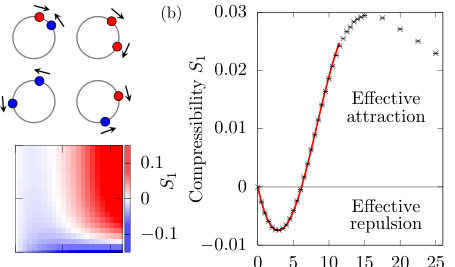
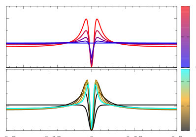
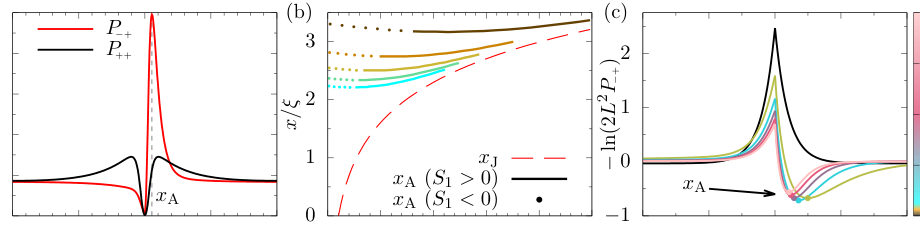
Summary. This paper provides a microscopic theoretical explanation for how purely repulsive active particles can exhibit effective attraction, a key driver of phase separation in active matter. By using field-theoretic renormalization, the authors show that attraction emerges as a higher-order effect of the repulsion. This bridges the gap between individual particle dynamics and macroscopic phase separation phenomena.
Why it may be interesting. not directly relevant
Main problem. Investigating the microscopic origin of effective attraction in Motility-Induced Phase Separation (MIPS) and clarifying how purely repulsive interactions between active particles lead to particle accumulation.
Main result. The study demonstrates that while the leading-order effect of increasing repulsion is effective repulsion, higher-order renormalization effects create an emergent effective attraction. This provides a microscopic basis for the equilibrium-like phase separation analogy in active matter.
Method. The authors use a bottom-up microscopic theory based on Doi-Peliti Field Theory (DPFT) and a path-integral approach, employing a perturbation expansion and Feynman diagrams to calculate loop corrections to the interaction vertices.
Model / system. A minimal model of two soft run-and-tumble particles (RTPs) in a one-dimensional periodic domain, interacting via a repulsive Yukawa potential and undergoing stochastic reorientation (tumbling).
Key observables. Two-point correlation function, compressibility factor (S1), joint particle density, effective potential (W_eff), and the distinction between jamming distance (x_J) and accumulation distance (x_A).
Important parameters / regimes. Normalized repulsion coupling (nu-bar), Péclet number (Pe) representing activity, normalized interaction length (xi-bar), and normalized reorientation rate (gamma-bar).
Assumptions / limitations. The model is restricted to a minimal 1D two-particle system and assumes a Yukawa potential for the soft interactions.
Figures summary. Figure 1 shows a schematic of the particles, a plot of compressibility vs. repulsion strength showing a crossover, and a phase diagram; Figure 2 displays joint particle density profiles for varying repulsion and activity levels.
Paper structure. The paper introduces the problem of MIPS and the equilibrium analogy, describes the 1D two-particle model and field-theoretic framework, presents the perturbative results showing the emergence of attraction, and concludes by discussing the implications for higher-dimensional MIPS.
Repulsive self-propelled particles tend to cluster, leading to Motility-Induced Phase Separation (MIPS). By analogy with equilibrium phase separation, the onset of MIPS has been associated with a transition to effective attraction between particles. Using an exact microscopic theory, we quantify the emergence of effective attraction in a minimal model: two soft run-and-tumble particles in a periodic domain. We show that, as repulsion increases, the leading-order behaviour is that of effective repulsion, while effective attraction emerges as a higher-order contribution to the renormalisation of the pair potential.
Authors: Ohad Vilk, Baruch Meerson
Type: theory · Category: statistical mechanics · PDF: https://arxiv.org/pdf/2605.01770v1
Analysis basis: full PDF text, analyzed in chunks
Topic relevance: driven-dissipative phase transition 2/5 · methods for driven-dissipative 2/5 · non-equilibrium dynamics 2/5 · non-equilibrium universality 2/5
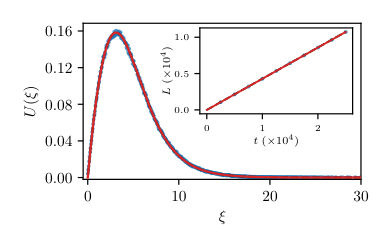
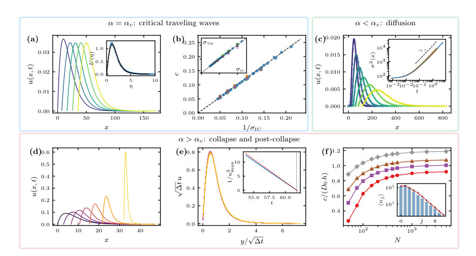
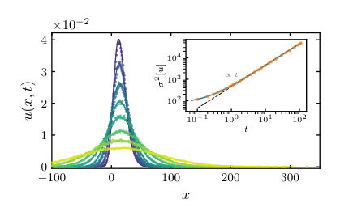
Summary. This paper explores how the complexity of reproduction rules changes the way populations spread through space. It identifies a phase transition in ternary reproduction where populations can either spread or collapse into localized 'bullets,' suggesting that the prevalence of binary division in nature may be due to fundamental dynamical constraints.
Why it may be interesting. not directly relevant
Main problem. The study investigates how higher-order asexual reproduction (beyond binary division) affects the population dynamics and existence of traveling wave solutions in invading species.
Main result. Increasing reproduction order $k$ qualitatively changes invasion dynamics: $k=2$ leads to $D$-independent wave speeds, $k=3$ exhibits a phase transition between diffusive spreading and population collapse (invasion bullets), and $k>3$ results in the disappearance of traveling waves.
Method. The authors use a combination of hydrodynamic (PDE) modeling, dimensional analysis, Monte Carlo simulations of a discrete lattice model, and a matching procedure for self-similar solutions.
Model / system. A 1D lattice model of $N$ random walkers with $k$-order cooperative reproduction ($kA o (k+1)A$) and spatial selection, where the leftmost particle is removed to maintain constant population size.
Key observables. Traveling wave speed ($c$), population density profiles ($u(x,t)$), characteristic width ($\sigma$), and the dimensionless parameter $\alpha = \Lambda/D$.
Important parameters / regimes. Reproduction order $k$, branching rate $\Lambda$, diffusion constant $D$, and the critical threshold $\alpha_c \simeq 7.089$ for the ternary case.
Assumptions / limitations. The continuum approximation assumes the density profile spans many lattice sites; the hydrodynamic limit assumes $N o \infty$.
Figures summary. The notes mention a comparison of discrete mean-field theory and continuum solvers, and a figure (S1) comparing models.
Paper structure. The paper introduces the $N$-BBM model extension, derives the hydrodynamic limit, analyzes different reproduction orders ($k=1, 2, 3, >3$), explores the critical behavior and self-similar collapse for $k=3$, and validates results via Monte Carlo simulations.
We extend the $N$ branching Brownian motions model of population invasion to higher-order asexual reproduction. Increasing reproduction order leads to qualitative changes: invasion fronts generically cease to exist beyond binary reproduction; and in the binary case itself, their speed becomes diffusion-independent. Ternary reproduction shows critical behavior, with collapse into a strongly localized `invasion bullet' in the supercritical regime, diffusive spreading in the subcritical regime, and a continuous family of fronts at criticality. These results suggest that the dominance of division and binary reproduction in nature reflects fundamental constraints on invasion dynamics.
Authors: Feiyi Liu, Min Guo, Shiyang Chen, Yuhan Jiang, Mingyang Liu, Yang Wang
Type: theory · Category: statistical mechanics · PDF: https://arxiv.org/pdf/2605.02478v1
Analysis basis: full PDF text, analyzed in chunks
Topic relevance: driven-dissipative phase transition 2/5 · methods for driven-dissipative 2/5 · non-equilibrium dynamics 2/5 · non-equilibrium universality 2/5
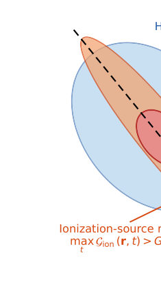
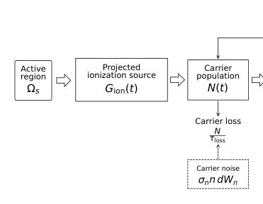
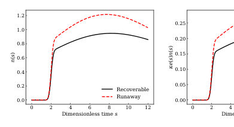
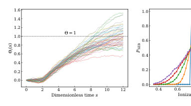
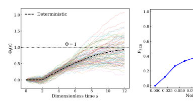
Summary. This paper develops a statistical-physics framework to model the probabilistic failure of SiC power MOSFETs under radiation. It demonstrates that microscopic fluctuations transform a sharp deterministic burnout threshold into a broad transition band and can trigger failure even in nominally safe conditions. This provides a way to bridge the gap between deterministic device simulations and observed experimental variability.
Why it may be interesting. The paper utilizes a first-passage framework and stochastic differential equations to describe a phase transition between stable and unstable regimes, which is highly relevant to the study of non-equilibrium phase transitions and noise-induced phenomena in open systems.
Main problem. Addressing the stochastic nature of Single-Event Burnout (SEB) in SiC power MOSFETs by moving beyond deterministic thresholds to account for threshold broadening and noise-induced subthreshold runaway.
Main result. Finite fluctuations broaden the deterministic burnout threshold into a probabilistic transition band and enable failure under nominally recoverable conditions via rare stochastic excursions.
Method. A reduced-order, stochastic electrothermal feedback-relaxation model formulated as a first-passage problem using stochastic differential equations (SDEs) and Euler-Maruyama integration.
Model / system. A coarse-grained electrothermal model of SiC power MOSFETs subject to heavy-ion-induced ionization, incorporating carrier multiplication, avalanche feedback, Joule heating, and thermal relaxation.
Key observables. Probability of Single-Event Burnout (P_SEB), first-passage-time distributions, survival probability, and threshold dispersion (transition width).
Important parameters / regimes. Ionization strength (l), feedback strength (F), thermal relaxation rate (r), noise amplitudes (sigma_n, sigma_Theta), and the thermal indicator (Lambda_th).
Assumptions / limitations. The model uses a coarse-grained approach that does not resolve specific device geometries or spatial profiles of electric fields and current density, and assumes independent noise for carriers and temperature.
Figures summary. Figure 1 shows spatial overlap of ion tracks and high-field regions; Figure 2 shows the electrothermal framework; Figures 3-5 illustrate deterministic trajectories, stochastic broadening, and noise-induced subthreshold runaway; Figure 6 details first-passage-time statistics; Figure 7 presents a feedback-relaxation phase diagram.
Paper structure. The paper progresses from a deterministic reduced-order model to a stochastic extension, followed by Monte Carlo trajectory simulations, and concludes with the presentation of a phase diagram and statistical observables.
Single-event burnout (SEB) in silicon carbide (SiC) power MOSFETs is often characterized by deterministic threshold quantities. Near the boundary between recovery and runaway, stochastic variability can make this threshold description probabilistic rather than sharp. This work introduces a first-passage perspective for stochastic threshold broadening in burnout. The process is described by a reduced electrothermal feedback-relaxation model with an absorbing boundary. The model combines carrier multiplication, avalanche feedback, localized heating, carrier loss, and thermal relaxation. Stochastic carrier and thermal terms represent unresolved event-level variability. The main finding is that finite fluctuations broaden the deterministic burnout threshold into a probabilistic transition band. Noise-induced subthreshold runaway also emerges, where nominally recoverable conditions can still fail through rare stochastic excursions. First-passage-time distributions resolve the time scale of burnout and survival probabilities further distinguish rapid feedback-dominated runaway from delayed stochastic failure. A feedback-relaxation phase diagram organizes recoverable, probabilistic, and rapidly unstable regimes. This framework provides a statistical-physics interpretation of threshold dispersion in single-event burnout of SiC power MOSFETs by linking coarse-grained electrothermal dynamics to probabilistic and time-resolved failure observables.
Authors: Sagarika Adhikary, Rajesh Singh
Type: theory · Category: statistical mechanics · PDF: https://arxiv.org/pdf/2605.02854v1
Analysis basis: full PDF text, analyzed in chunks
Topic relevance: driven-dissipative phase transition 2/5 · non-equilibrium dynamics 2/5 · non-equilibrium universality 2/5
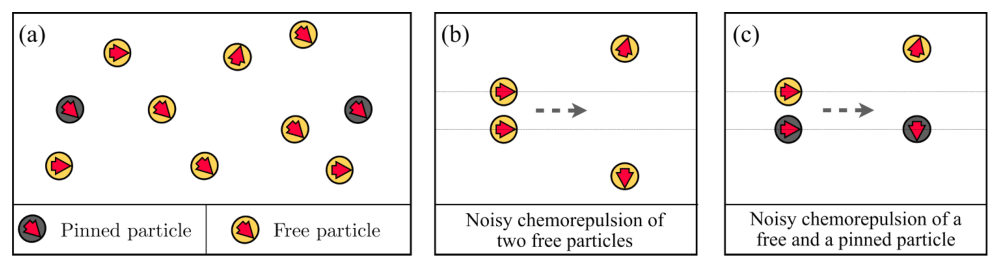
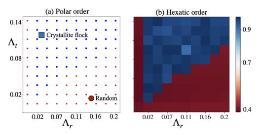
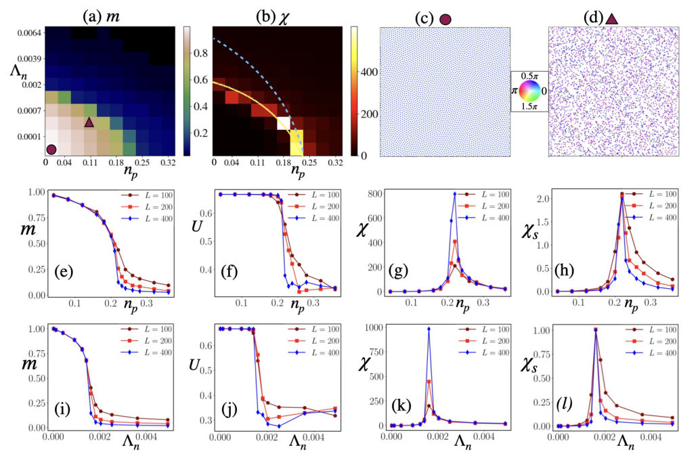
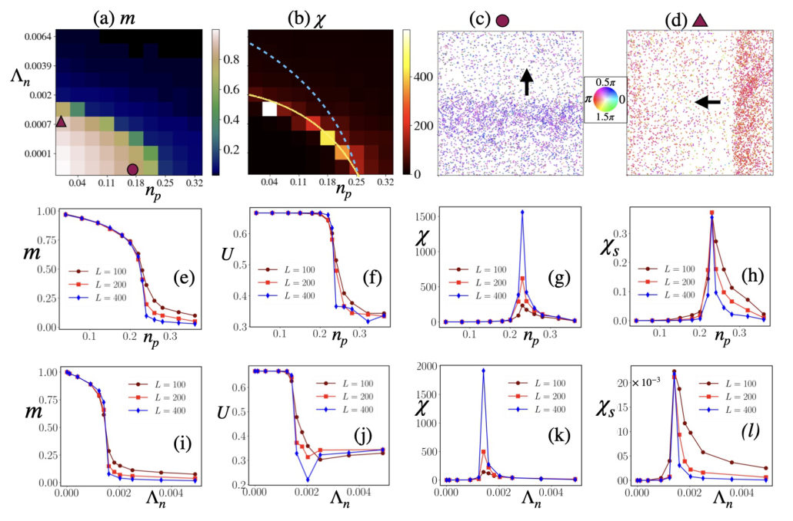
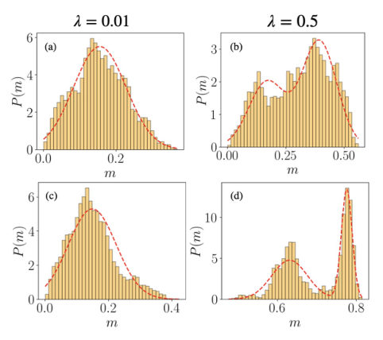
Summary. This paper studies how noise and quenched disorder compete to influence flocking in active matter with chemical interactions. It reveals that the nature of the phase transition and the formation of spatial patterns like density bands are highly sensitive to the range of the chemical interaction.
Why it may be interesting. not directly relevant
Main problem. Investigating how collective flocking dynamics and spatial order emerge and are modified by the interplay of quenched disorder (pinned particles) and angular noise in chemorepulsive active colloids.
Main result. The noise-driven phase transition depends significantly on particle density, whereas the pinning-driven transition does not; additionally, short-range interactions lead to discontinuous transitions and density band formation.
Method. Particle-based numerical simulations in a 2D continuous space using an Euler-Maruyama integrator and finite-size scaling analysis.
Model / system. A 2D collection of active colloids consisting of mobile and pinned particles that interact via a self-generated, chemorepulsive chemical field with both translational and rotational components.
Key observables. Polar order parameter (m), hexatic order parameter (psi_6), susceptibility (chi), Binder cumulant (U), and order parameter distribution P(m).
Important parameters / regimes. Pinning fraction (np), angular noise strength (Lambda_n), interaction screening parameter (lambda), and particle area fraction (phi).
Assumptions / limitations. The chemical field is modeled in the steady-state limit (instantaneous interaction), and particles have a fixed radius and constant self-propulsion speed.
Figures summary. Figure 1 shows model schematics; Figure 2 presents phase diagrams for order parameters; Figure 4 illustrates phase transitions and density bands; Figure 5 shows order parameter probability distributions; Figure 6 shows radial pair correlation functions.
Paper structure. The paper introduces the chemorepulsive model, presents phase diagrams for noise-free/disorder-free systems, analyzes the impact of noise and pinning disorder on phase transitions, explores the effect of interaction range (long vs. short), and concludes with scaling and structural analysis.
Recent studies of active colloidal matter have revealed that a global polar order can arise from chemorepulsive interactions among particles without any explicit alignment interaction between them. In this work, we investigate such chemically interacting active colloids in the presence of quenched disorder, where a fraction of particles are randomly pinned in space. These pinned particles are restricted to rotational motion while remaining chemically coupled to the mobile population. In addition, angular noise is incorporated into the rotational dynamics to capture stochastic effects. To elucidate the interplay of quenched disorder and noise, we construct phase diagrams based on polar order and its fluctuations, and systematically analyze the associated disorder- and noise-driven phase transitions. Surprisingly, we find that the phase transition driven by the noise is significantly dependent on the density of the particles, whereas such a density-dependence is not present when the control parameter is the pinning fraction. The finite-size effects on these transitions are also examined. An effective interaction range, governed by the coefficient related to screening of the chemorepulsive interaction, plays a crucial role in collective behavior. When the effective interaction range is much smaller than the system size, the system exhibits density band formation, a feature absent in the long-range interaction regime. Moreover, near the transition point, the order parameter distribution becomes bimodal for the case of short-range interaction.
Authors: King Yiu Yu, Aritra Sarkar, Erbing Hua, Maximilian Rimbach-Russ, Ryoichi Ishihara, Sebastian Feld
Type: theory · Category: quantum information and computing · PDF: https://arxiv.org/pdf/2605.01367v1
Analysis basis: full PDF text, analyzed in chunks
Topic relevance: correlated / nonlocal dissipation 2/5 · methods for driven-dissipative 2/5 · quantum measurements 2/5
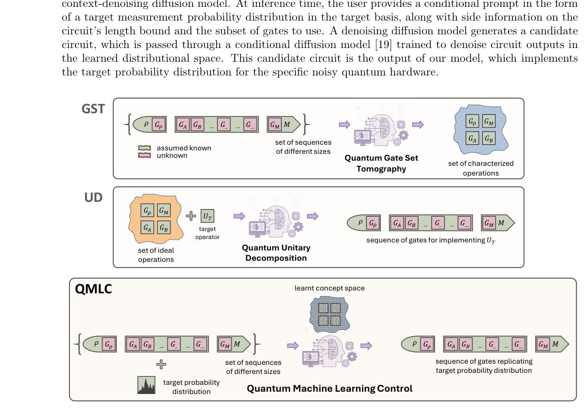
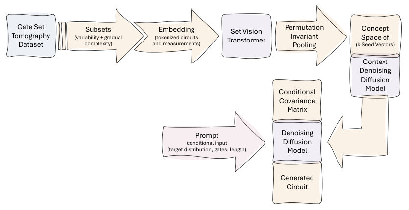
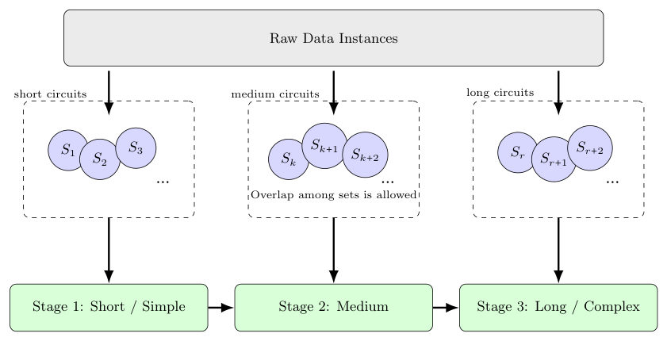
Summary. This paper introduces a new machine learning framework that uses raw Gate Set Tomography data to directly generate quantum circuits tailored to a specific noisy device. By using a hierarchical diffusion model, it bypasses the need for idealized gate models, allowing for the synthesis of circuits that are inherently aware of hardware-specific errors like crosstalk and drift.
Why it may be interesting. This work is highly relevant for researchers in open quantum systems as it proposes a way to implicitly learn and utilize complex, non-Markovian noise environments (like crosstalk) for practical control without requiring explicit Hamiltonian modeling.
Main problem. The decoupling of quantum gate characterization and circuit compilation leads to a hardware-software gap where compilers fail to account for complex, correlated noise like crosstalk and drift in NISQ devices.
Main result. The authors propose a Quantum Machine Learning Control (QMLC) framework that bypasses traditional two-step pipelines by directly learning a hardware-native latent concept space from Gate Set Tomography (GST) data to synthesize noise-aware circuits.
Method. A hierarchical generative pipeline using a Set Vision Transformer (Set-ViT) encoder to extract device context from GST data, followed by a two-stage diffusion model (Global-Context and Conditional Circuit-Token Diffusion) for circuit synthesis.
Model / system. The framework targets NISQ-era quantum processors, specifically focusing on Clifford circuits on n-qubit registers, and is designed to handle hardware-specific noise such as crosstalk, decoherence, and calibration drift.
Key observables. GST circuit-measurement pairs, measurement probability distributions, and target conditional covariance matrices.
Important parameters / regimes. Circuit depth, gate count, qubit number (n), and the signal-to-noise ratio (SNR) schedule for the diffusion process.
Assumptions / limitations. The system is assumed to be stationary over the characterization window, and the implementation assumes a diagonal covariance matrix for efficient computation.
Figures summary. Figure 1 compares the traditional GST-to-decomposition pipeline with the proposed QMLC pipeline; Figure 2 illustrates the architecture of the generative decoder; Figure 3 shows the data grouping strategy and curriculum learning progression.
Paper structure. The paper identifies the limitations of current compilation pipelines, introduces the QMLC framework, details the Set-ViT encoder and hierarchical diffusion decoder architectures, describes the training strategies (curriculum learning and label consistency), and discusses potential applications in quantum control and neuromorphic integration.
High-fidelity circuit execution on noisy intermediate-scale quantum devices is bottlenecked by compilation pipelines that disregard complex, correlated noise. To address this, this methodology article proposes a quantum machine learning control (QMLC) framework for generative quantum circuit synthesis from gate-set tomography (GST) data that bypasses the traditional two-step pipeline of characterizing native quantum gates via GST followed by unitary decomposition algorithms. Instead, a generative concept space is directly learnt from GST data, enabling conditional synthesis of quantum circuits on a desired output distribution. Our approach tokenizes GST germ circuits and embeds them into a structured latent space using a curriculum-learning-motivated strategy, starting with short circuits and progressively incorporating longer ones with diverse output statistics. The embedded sequences are processed by a set-vision transformer with permutation-invariant pooling, producing k-seed vectors that represent the learned concept space of the quantum device. Aggregating data across multiple circuits makes this latent representation inherently context-aware, capturing the shared physical noise environment (e.g., crosstalk, drift) that isolated gate metrics miss. We propose an unconditional diffusion model to sample from the concept space. During inference, a user provides a target measurement distribution, and the model generates a corresponding circuit. To ensure fidelity and robustness, the output is denoised using a diffusion model that operates on the target conditional covariance matrix. This end-to-end framework is a step towards context-aware, hardware-native circuit synthesis directly from raw GST data, which offers a new paradigm for integrating quantum control and compilation. The QMLC framework is particularly suited for near-term quantum devices with complex calibration procedures.
Authors: Maurice P. Schmitt, Hendrik Meyer, Peter Virnau
Type: both · Category: statistical mechanics · PDF: https://arxiv.org/pdf/2605.02644v1
Analysis basis: full PDF text, analyzed in chunks
Topic relevance: analog quantum simulation 2/5 · Frenkel-Kontorova 1/5 · entanglement & information structure 1/5 · methods for driven-dissipative 1/5
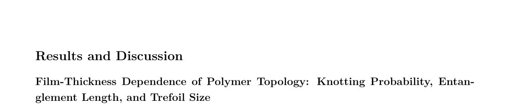
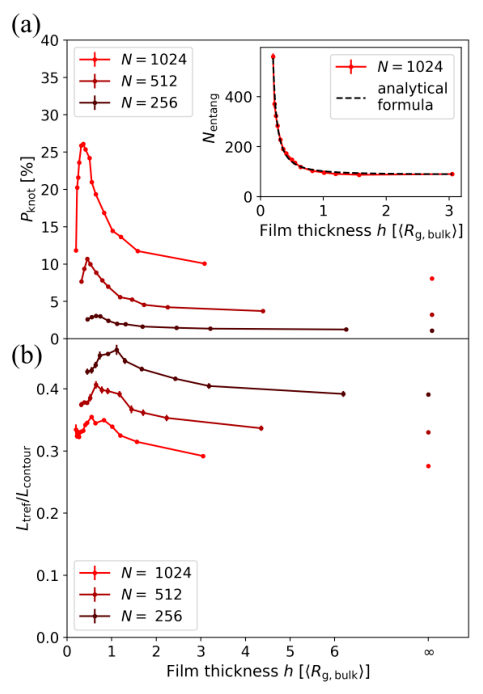
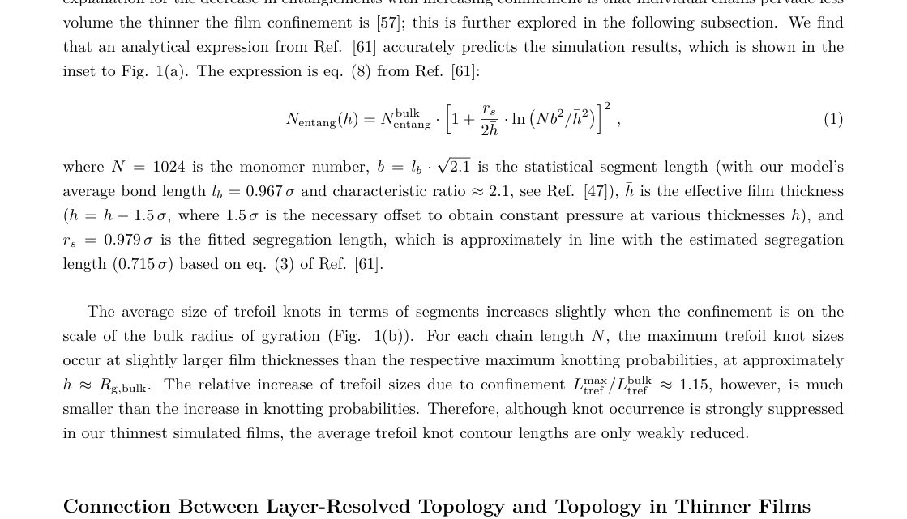
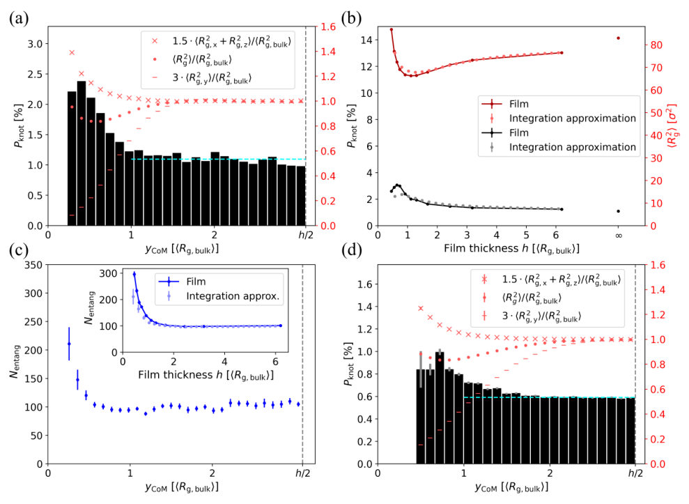
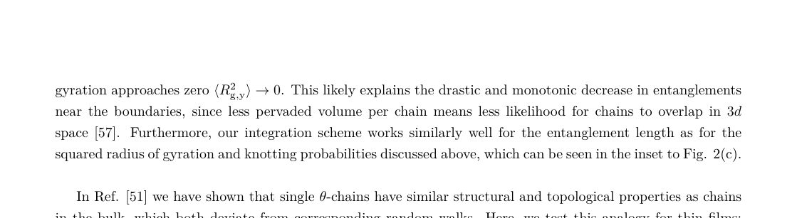
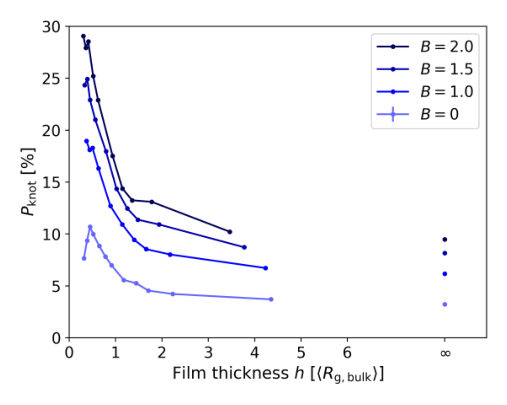
Summary. This work quantitatively examines how confining a polymer film between two walls affects its internal structure and topology. Key findings show that knotting probability peaks at an intermediate thickness related to the chain's bulk size, and that wall proximity causes the polymer conformation to flatten. The study uses advanced simulation techniques and layer-by-layer analysis to build a comprehensive picture linking confinement, chain flexibility, and topological complexity.
Why it may be interesting. While focused on classical polymer physics, the study of topological constraints and confinement effects provides a rich analogy for understanding entanglement in quantum many-body systems or the topological stability of quantum states.
Main problem. The study investigates how physical confinement, modeled by varying film thickness, alters the topological properties (knotting) and conformational statistics (entanglements) of polymer chains.
Main result. Knotting probability shows a non-monotonic dependence on film thickness, peaking near the bulk radius of gyration, while layer-resolved analysis confirms that wall effects dictate local structural changes.
Method. The research employs Molecular Dynamics (MD) simulations and Monte Carlo methods, utilizing specialized codes for knot detection (Alexander polynomial) and entanglement analysis (Z1+ code).
Model / system. The system consists of polymer chains confined between two parallel walls (thin films). The model incorporates harmonic bonds, repulsive WCA interactions, and a Kratky-Porod potential to account for chain stiffness.
Key observables. Knotting probability ($P_{ ext{knot}}$), entanglement length ($ ext{N}_{ ext{entang}}$), and layer-resolved components of the squared radius of gyration ($\langle R_g^2 angle$).
Important parameters / regimes. Film thickness ($h$), stiffness parameter ($B$), and the bulk radius of gyration ($R_{g, ext{bulk}}$) serve as critical length scales.
Assumptions / limitations. The analysis relies on developing an integration scheme to extrapolate global film properties from layer-resolved data, though deviations are noted for very thin films.
Figures summary. Figures illustrate the non-monotonic dependence of $P_{ ext{knot}}$ on $h$ for flexible chains, and show layer-resolved profiles of knotting and $\langle R_g^2 angle$ components near the confining walls.
Paper structure. The paper systematically analyzes the effect of confinement on topology, first establishing the general $h$-dependence, then using layer-resolved analysis to map local wall effects, and finally investigating the role of chain flexibility (stiffness $B$).
We study how confinement affects topology and conformations in polymer films of varying thickness $h$. The knotting probability exhibits a maximum at intermediate thicknesses near the bulk radius of gyration $h \approx R_\mathrm{g,bulk}$, vanishes at small $h$ and approaches bulk values for large $h$. Close to walls, the entanglement length increases monotonically and conformations become flatter. A layer-resolved analysis of structural and topological properties allows us to reconstruct the explicit thickness dependencies by integrating layer-resolved properties of a thick film.
Authors: Anjali Mahapatra, Gururaj Kadiri
Type: theory · Category: quantum information and computing · PDF: https://arxiv.org/pdf/2605.02367v1
Analysis basis: full PDF text, analyzed in chunks
Topic relevance: analog quantum simulation 2/5 · non-equilibrium dynamics 2/5 · entanglement & information structure 1/5
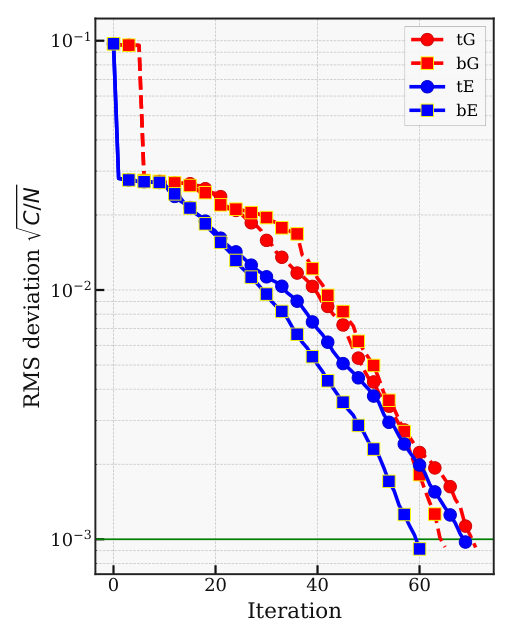
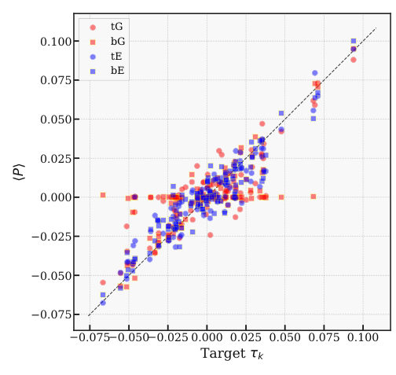
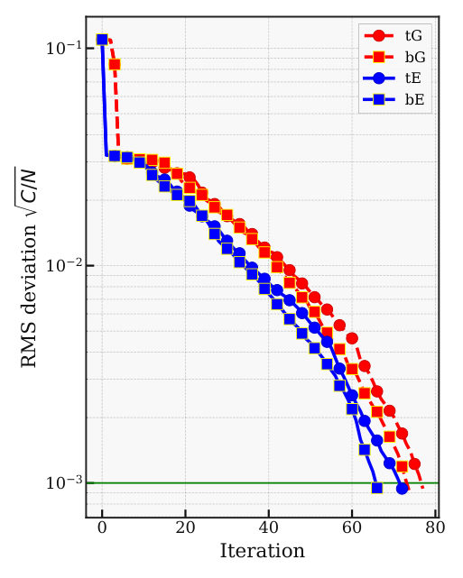
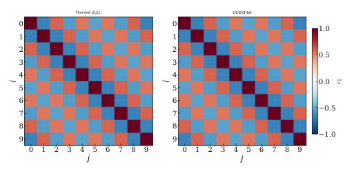
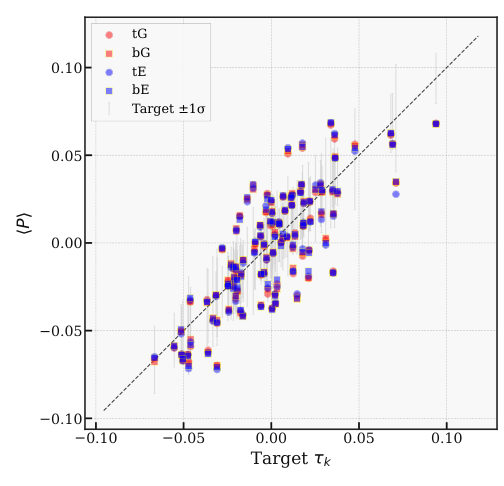
Summary. This paper presents QUEST, a new quantum algorithm for engineering pure states that satisfy multiple simultaneous expectation-value constraints. By using an adaptive, analytic approach to determine rotation angles, it avoids the vanishing gradient and local minima problems that plague standard variational quantum algorithms. The method is shown to be highly effective for preparing complex states, such as thermal states and Hubbard model configurations.
Why it may be interesting. It provides a robust alternative to ADAPT-VQE for many-body dynamics and state engineering, specifically offering a way to synthesize complex states (like thermal or fermionic states) without the instabilities of classical gradient-based optimization.
Main problem. The challenge of preparing a pure quantum state that simultaneously satisfies multiple prescribed expectation-value constraints, a task that generalizes standard ground-state preparation but suffers from vanishing gradients and local minima in standard variational algorithms.
Main result. The introduction of QUEST, a framework that uses an adaptive sequence of Pauli rotations with analytically determined angles to bypass the optimization failures (like barren plateaus and stalling) common in gradient-based variational methods.
Method. An iterative, 'optimizer-free' algorithm that constructs a state via a depth-adaptive sequence of Pauli rotations, using either gradient-based selection or an exact analytic approach to determine rotation angles by reconstructing a trigonometric polynomial.
Model / system. The framework is general and applicable to any n-qubit system, with specific demonstrations using the Transverse Field Ising Model (TFIM) for pseudo-thermal state generation and the 1D Hubbard model for fermionic lattice simulations.
Key observables. A set of Hermitian operators (Pauli strings) and their target expectation values.
Important parameters / regimes. The number of qubits, the set of target values, the Pauli pool (e.g., weight-2 strings), and the weighting strategy for the cost function (e.g., spectral width or uncertainty-based).
Assumptions / limitations. The algorithm assumes the state is prepared via a Pauli path (a sequence of Pauli rotations) and that expectation values can be accessed via a quantum oracle.
Figures summary. Figures show the convergence of the RMS cost per constraint for different QUEST variants in noise-less and noisy scenarios, the evolution of expectation values during the algorithm, and the success of the method in capturing thermal and fermionic properties in the Hubbard model.
Paper structure. The paper formalizes the expectation-value targeting problem, critiques the failure modes of existing VQAs, introduces the QUEST framework and its various implementations (tG, bG, tE, bE), provides mathematical proofs for gradient vanishing, and demonstrates performance through TFIM and Hubbard model simulations.
This work introduces a formulation of quantum state engineering termed expectation-value targeting: the task of preparing a pure state whose expectation values with respect to a prescribed set of observables attain specified targets. This formulation subsumes standard ground-state preparation problems in quantum chemistry and many-body physics, while extending beyond variational energy minimization to multi-constraint state synthesis. The problem amounts to solving a system of nonlinear constraints on an exponentially large state space, for which no general efficient classical approaches are known. Variational quantum algorithms tackle this problem by restricting the search to a low-dimensional parameter space, and relying on classical optimization techniques for solutions. However, these approaches can become extremely ineffective for the present problem, where competing constraints can induce rugged landscapes and vanishing gradients (barren plateaus). Adaptive variational methods, in which the ansatz is constructed iteratively from a pool of candidate operators rather than fixed in advance, have been developed primarily for ground-state preparation. However, we show that the present problem also admits a similar construction. We introduce QUEST (Quantum Unitary Engineering of States to Target), a framework purpose-built for expectation-value targeting, in which the engineered state is constructed as a depth-adaptive sequence of Pauli rotations, with each rotation chosen to descend a sum-of-squared-residuals cost. QUEST provides a constructive route to expectation-value targeting, building the engineered state one Pauli rotation at a time, and establishes adaptive synthesis as a primitive for state preparation under multiple, potentially inconsistent target constraints.
Authors: Fabio Bagarello, Emanuele Balistreri, Antonino Faddetta
Type: theory · Category: other · PDF: https://arxiv.org/pdf/2605.01443v1
Analysis basis: full PDF text, analyzed in chunks
Topic relevance: correlated / nonlocal dissipation 2/5 · methods for driven-dissipative 2/5
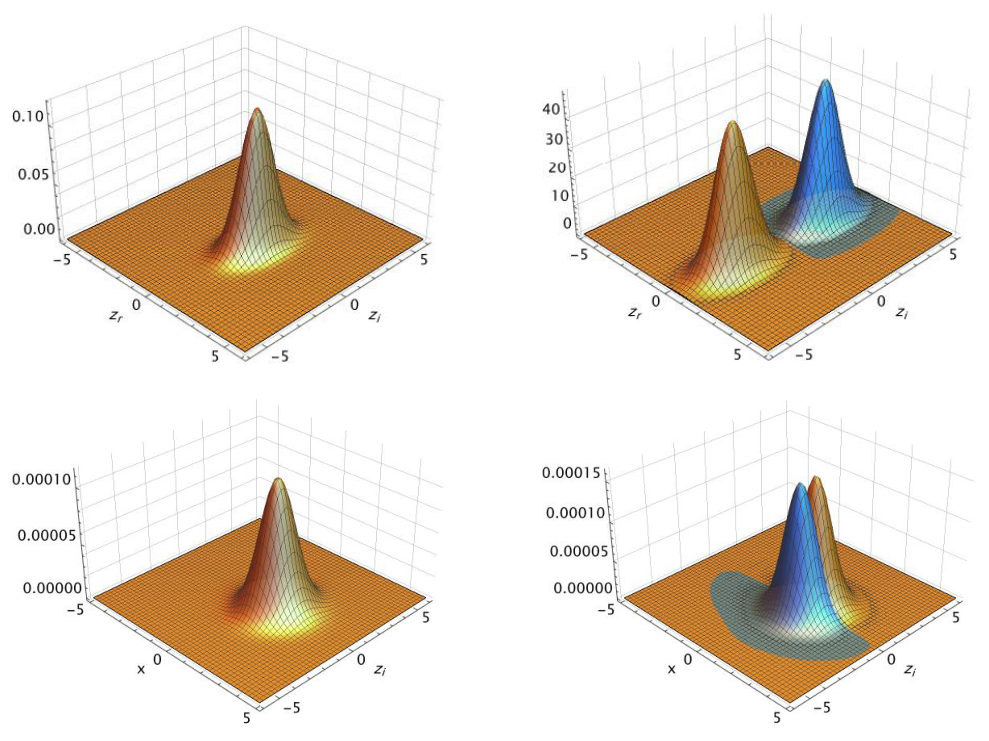
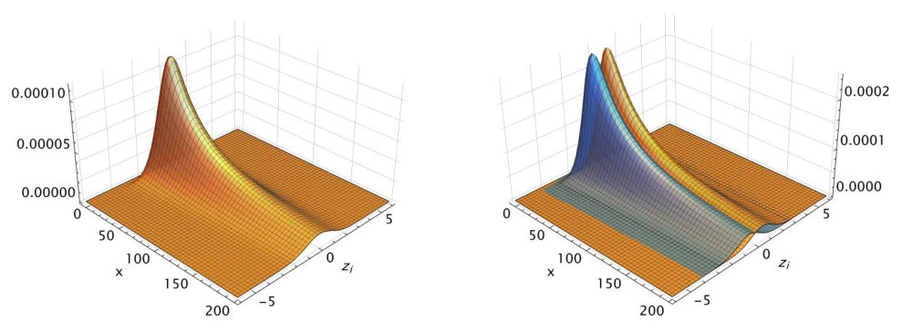
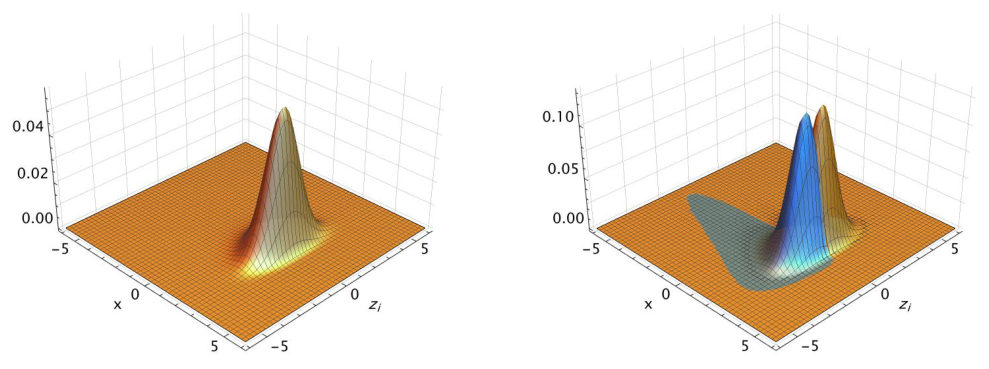
Summary. This paper develops an algebraic method to solve Hamiltonians with position-dependent mass and complex potentials. It demonstrates how pseudo-bosonic structures can be preserved in these systems and provides a complete construction of biorthogonal eigenstates and bi-coherent states.
Why it may be interesting. This work provides a rigorous mathematical framework for handling non-Hermitian systems with spatially varying parameters, which is highly relevant for describing dissipation and effective models in open quantum systems and quantum optics.
Main problem. The paper aims to find the eigenvalues, eigenvectors, and bi-coherent states for a class of one-dimensional Hamiltonians featuring position-dependent mass (PDM) and potentially non-self-adjoint potentials.
Main result. The authors successfully constructed biorthogonal eigenstates and proved the mathematical equivalence of two different approaches to defining bi-coherent states using pseudo-bosonic algebra.
Method. The study employs an algebraic approach using abstract ladder operators (ALOs), operator factorization, and variable transformations to map the PDM Hamiltonian to a quadratic form.
Model / system. A one-dimensional particle with a position-dependent mass m(x) and a complex potential V(x), where the Hamiltonian is factorizable and related to pseudo-bosonic operators.
Key observables. Energy eigenvalues (E_n), wavefunctions (eigenstates), and bi-coherent states.
Important parameters / regimes. The commutation parameter lambda, the mass function m(x), and the complex parameter gamma; specifically, the real part of lambda determines square-integrability.
Assumptions / limitations. The Hamiltonian is not assumed to be self-adjoint, and the mass function m(x) is assumed to be smooth and positive.
Paper structure. The paper begins by defining the PDM Hamiltonian and the ALO strategy, proceeds to derive the explicit forms of the potential and operators via factorization, analyzes the square-integrability of states under different mass profiles, and concludes by constructing and proving the equivalence of bi-coherent state definitions.
We consider the Hamiltonian $H$ of a particle in one dimension with a position dependent mass for which we apply the recent strategy of the so-called {\em abstract ladder operators}, in the attempt to find its eigenvalues and eigenvectors. We don't assume that $H$ is self-adjoint, while we focus on the case of a factorizable operator. We show then that pseudo-bosonic operators play a relevant role in this analysis, and we construct bi-coherent states attached to these operators. Explicit examples are discussed.
Authors: Jeremy Levy
Type: theory · Category: other · PDF: https://arxiv.org/pdf/2605.01585v1
Analysis basis: full PDF text, analyzed in chunks
Topic relevance: entanglement & information structure 2/5 · non-equilibrium universality 2/5
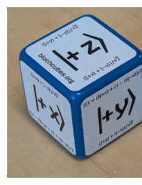
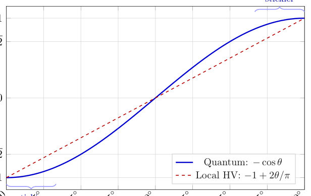
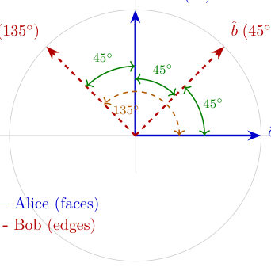
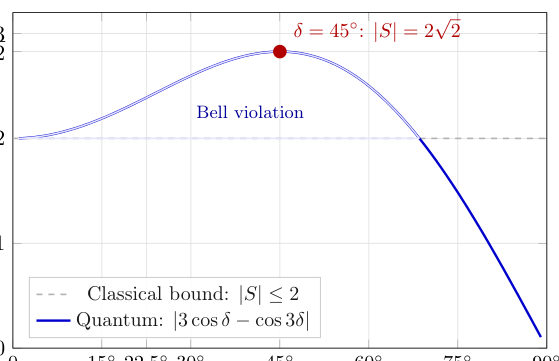
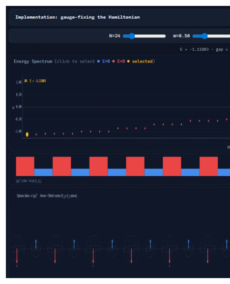
Summary. This is a graduate-level textbook that reinterprets the standard quantum mechanics curriculum as a series of controlled generalizations starting from a single qubit. It connects fundamental quantum mechanics to advanced topics like the Dirac equation and the Renormalization Group through the lens of discrete-to-continuous transitions.
Why it may be interesting. It provides a deep conceptual unification between quantum information (qubits/QEC) and many-body physics (RG/field theory), which is highly relevant for researchers studying the emergence of continuous physics from discrete quantum architectures.
Main problem. The text aims to provide a unified pedagogical framework for graduate quantum mechanics by connecting the simplest quantum system (the qubit) to complex phenomena like the Dirac equation and the Renormalization Group.
Main result. It demonstrates that the standard apparatus of graduate quantum mechanics can be understood as a sequence of controlled generalizations, moving from discrete to continuous systems across various scales.
Method. A 'looping' pedagogical approach that progressively relaxes constraints (dimensionality, space, time, and coupling) and uses the Renormalization Group to bridge microscopic and macroscopic physics.
Model / system. The foundational model is the single spin-1/2 qubit (Bloch cube), which is expanded into multi-qubit lattices, the hydrogen atom, the Dirac equation, and the Ising model.
Key observables. Expectation values, probability (Born rule), energy eigenvalues, critical exponents, and scaling dimensions.
Important parameters / regimes. Hilbert space dimension, real space lattice spacing, time steps, coupling constants, and the epsilon parameter (4-d).
Assumptions / limitations. Assumes a working command of undergraduate-level linear algebra, complex analysis, and multivariable calculus.
Figures summary. The Bloch cube for visualizing qubit states; the beta function for the phi^4 theory showing the Gaussian and Wilson-Fisher fixed points; and energy gaps in the transverse-field Ising model.
Paper structure. The text follows a circular logic: starting with the single qubit, moving through multi-qubit lattices and continuous wave mechanics, progressing to 3D angular momentum and the hydrogen atom, then to relativistic dynamics and the Renormalization Group, and finally returning to the protected logical qubit.
This textbook is drawn from notes for a two-semester graduate course in quantum mechanics. It begins with the most constrained quantum system, and recovers the rest of the subject by relaxing those constraints one at a time. The starting point is a single qubit, the smallest nontrivial Hilbert space with the strongest possible restriction on its dynamics, made concrete by a Bloch cube whose six faces are the cardinal states of a spin-1/2 system. Tensor products admit many qubits; lattices give them a place to live; time evolution sets them in motion; the continuum limit produces wavefunctions; three-dimensional angular momentum, the hydrogen atom, and perturbation theory follow; Lorentz invariance promotes the lattice of spinors to the Dirac equation; and the renormalization group asks how theories at different scales relate. Each chapter loosens one feature of the qubit while keeping the others fixed, so that the standard apparatus of graduate quantum mechanics arrives as a sequence of controlled generalizations rather than as separate topics. Discrete-to-continuous transitions recur at four scales: in Hilbert-space dimension, in real space, in time, and in coupling. The book closes by reimposing one of the original constraints, returning to a two-level system that is now a logical qubit protected by quantum error correction, with the fault-tolerance threshold appearing as an unstable RG fixed point and supplying the reason a logical qubit, independent of its underlying hardware, can exist at all.
Authors: Xin Wang, Rebing Wu
Type: theory · Category: quantum information and computing · PDF: https://arxiv.org/pdf/2605.02343v1
Analysis basis: full PDF text, analyzed in chunks
Topic relevance: entanglement & information structure 2/5 · methods for driven-dissipative 2/5
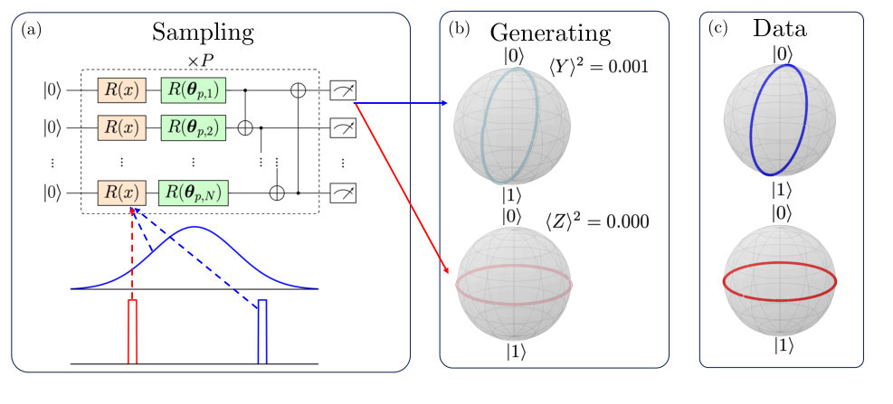
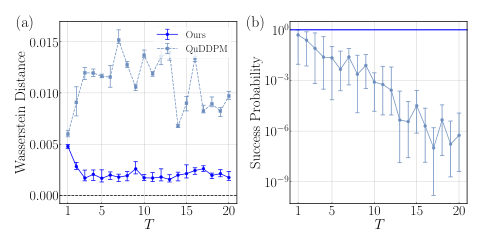
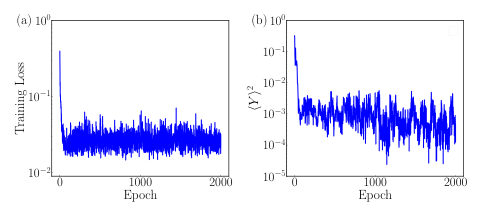
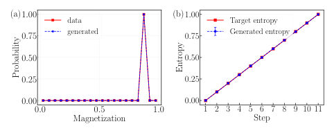
Summary. The paper introduces a new quantum generative model that uses classical noise re-uploading to generate quantum states in a single step. This approach avoids the exponential decay of success probability found in diffusion-based quantum models and demonstrates high efficiency in learning many-body properties like magnetization and entanglement.
Why it may be interesting. not directly relevant
Main problem. Existing quantum generative models like QuDDPM and QFM suffer from extremely low post-selection probabilities due to multi-step processes and high training/preparation overhead.
Main result. The proposed classical noise reuploading paradigm enables efficient single-step generation with a constant success probability of 1, outperforming existing models in generating quantum state distributions and learning many-body phases.
Method. A quantum generative model using a data re-uploading circuit where classical noise is sampled and encoded via parameterized gates, optimized using the 2-Wasserstein distance via the Sinkhorn algorithm.
Model / system. The model uses a parameterized quantum circuit (PQC) with noise re-uploaded at each step. It is tested on single-qubit Bloch sphere distributions and a 10-qubit Transverse-Field Ising Model (TFIM) with Hamiltonian H = -sum(Zn Zn+1) - g*sum(Xn).
Key observables. 2-Wasserstein distance (W2), magnetization (M), entanglement entropy (S), and expectation values like
Important parameters / regimes. Number of circuit repetitions (P), transverse field strength (g), and classical noise distribution (1D Gaussian or uniform).
Assumptions / limitations. The input noise dimension is assumed to be one to avoid multidimensional complexity.
Figures summary. Fig 1 shows the framework of noise sampling and re-uploading; Fig 2 shows training loss and metric evolution; Fig 3 compares Wasserstein distance and success probability against QuDDPM; Fig 4 compares magnetization and entanglement entropy distributions.
Paper structure. Introduction of the problem, description of the noise reuploading framework, implementation details (loss functions and optimization), experimental validation on single-qubit states, application to many-body systems (TFIM and entanglement growth), and comparative performance analysis.
We propose a novel quantum generative model paradigm that fundamentally avoids the issue of extremely small post-selection probabilities present in previous models. Unlike existing methods that require multi-step noise addition and denoising, this paradigm enables direct single-step generation of quantum data, significantly improving generation efficiency while substantially reducing the complexity of training and quantum state preparation. Furthermore, by directly sampling classical noise to generate quantum states, the sampling process becomes easier to implement. Experimental results demonstrate that this paradigm outperforms existing quantum generative models in terms of generation quality.
Authors: Maurice de Gosson
Type: theory · Category: other · PDF: https://arxiv.org/pdf/2605.01103v1
Analysis basis: full PDF text, analyzed in chunks
Topic relevance: entanglement & information structure 2/5 · quantum measurements 2/5
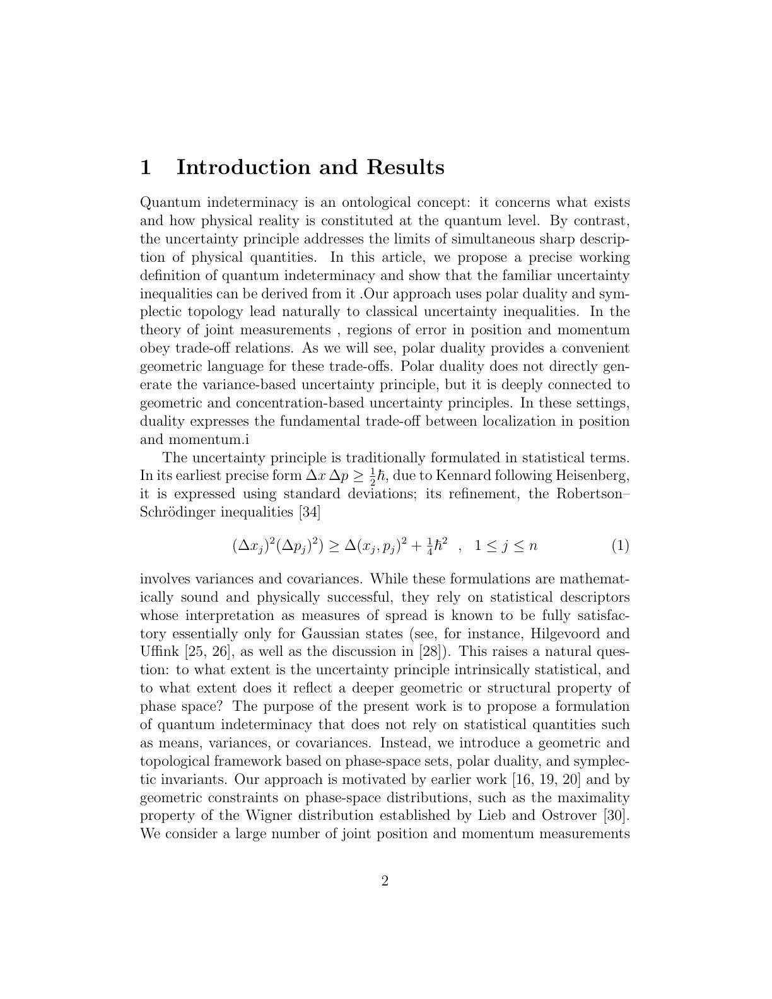
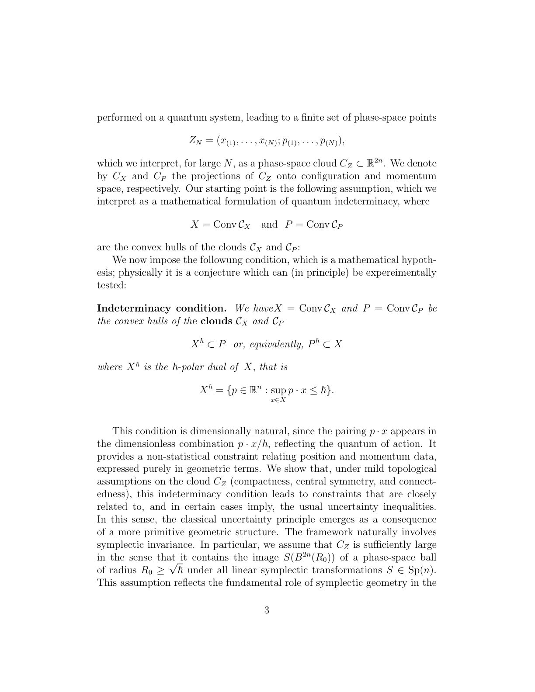
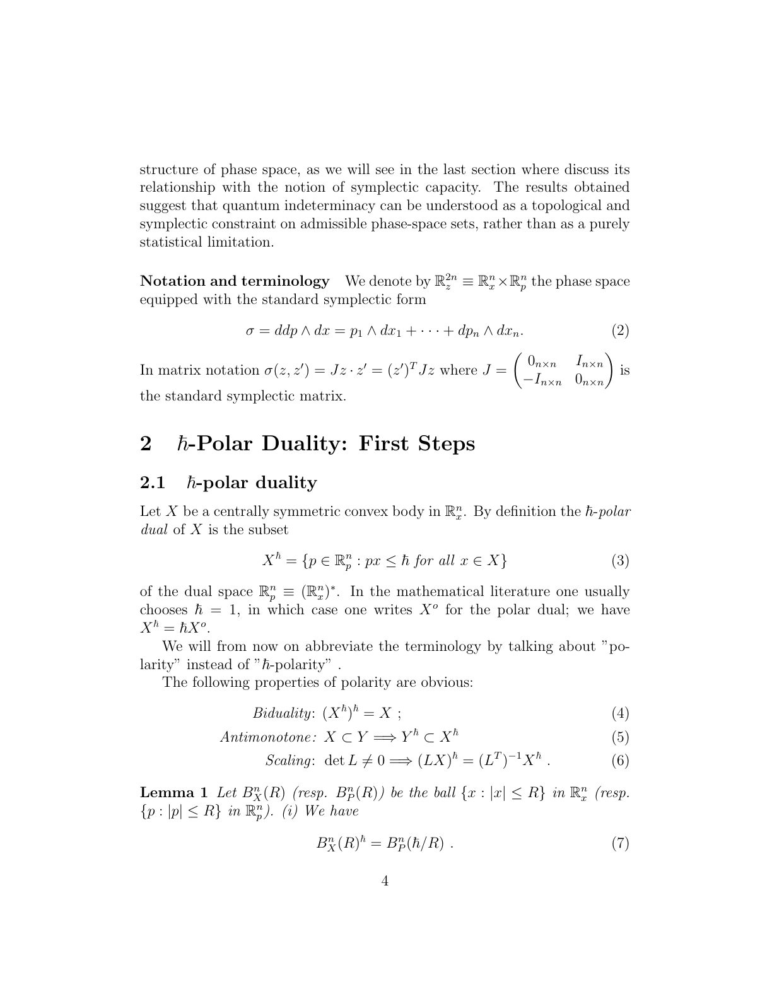
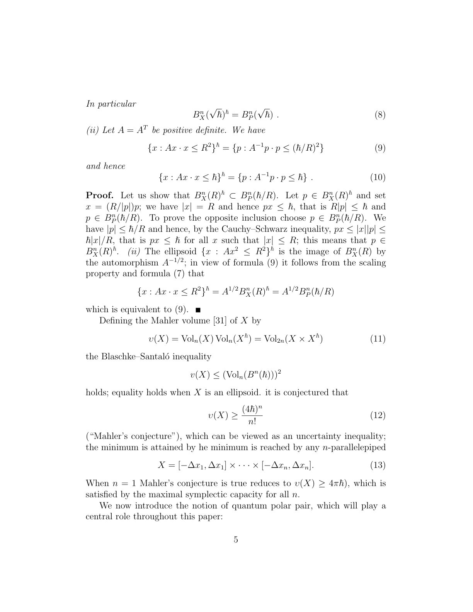
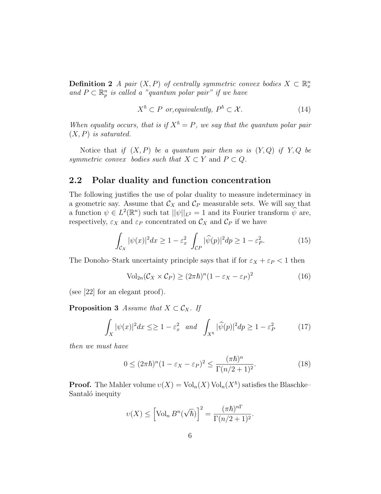
Summary. This paper proposes that quantum uncertainty is a structural property of phase space geometry rather than a statistical effect. By using symplectic topology and convex geometry, the author shows that the Heisenberg and Robertson-Schrodinger uncertainty relations emerge naturally from the properties of 'quantum blobs.' This provides a coordinate-free, topological foundation for the fundamental constraints of quantum mechanics.
Why it may be interesting. This provides a deep geometric foundation for the uncertainty principle, which could offer new insights into the fundamental limits of measurement and state preparation in quantum optics and continuous-variable quantum information.
Main problem. The paper seeks to reformulate quantum indeterminacy as a fundamental structural property of phase space geometry rather than a purely statistical phenomenon.
Main result. The author derives standard uncertainty inequalities, such as the Robertson-Schrodinger and Hardy uncertainty principles, as necessary consequences of symplectic topology and h-polar duality of convex bodies.
Method. The approach utilizes convex geometry, symplectic topology (including symplectic capacities and Gromov's non-squeezing theorem), and the theory of metaplectic operators.
Model / system. The framework is based on a phase-space cloud in R^2n represented by convex bodies, specifically focusing on quantum blobs and Gaussian states within a symplectic manifold.
Key observables. Position and momentum projections, symplectic capacities, and the Mahler volume.
Important parameters / regimes. The reduced Planck constant (h-bar) as the fundamental scale, and the symplectic eigenvalues of covariance matrices.
Assumptions / limitations. The phase-space cloud is assumed to be compact, centrally symmetric, and connected, and the analysis primarily focuses on the centered case.
Paper structure. The paper introduces a geometric formulation of uncertainty, develops the mathematical tools of h-polar duality and symplectic capacities, establishes a bijection between quantum blobs and Gaussian functions, and finally derives the classical uncertainty principles as geometric consequences.
We introduce a geometric formulation of quantum indeterminacy from which the standard uncertainty inequalities emerge as necessary consequences. Our approach is based on convex geometry in phase space and on methods from symplectic topology, and does not rely on statistical descriptors such as variances or covariances. Instead, we associate to empirical position and momentum data with convex bodies whose mutual relations encode the fundamental constraints of quantum mechanics. The central tools are h-polar duality and symplectic capacities, which provide intrinsic, coordinate-free bounds on admissible phase-space configurations. Within this framework, the Robertson-Schrodinger inequalities arise naturally as manifestations of deeper geometric and topological principles. This perspective suggests that quantum indeterminacy is not primarily a statistical phenomenon, but rather a structural property of phase space governed by symplectic covariance. The results thus provide a unified and conceptually transparent foundation for the uncertainty principle.
Authors: Yixian Qiu, Josep Lumbreras, Xiufan Li, Patrick Rebentrost
Type: theory · Category: quantum information and computing · PDF: https://arxiv.org/pdf/2605.02850v1
Analysis basis: full PDF text, analyzed in chunks
Topic relevance: entanglement & information structure 2/5 · quantum measurements 2/5
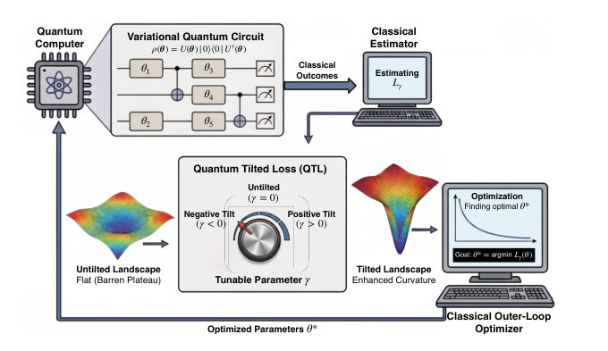
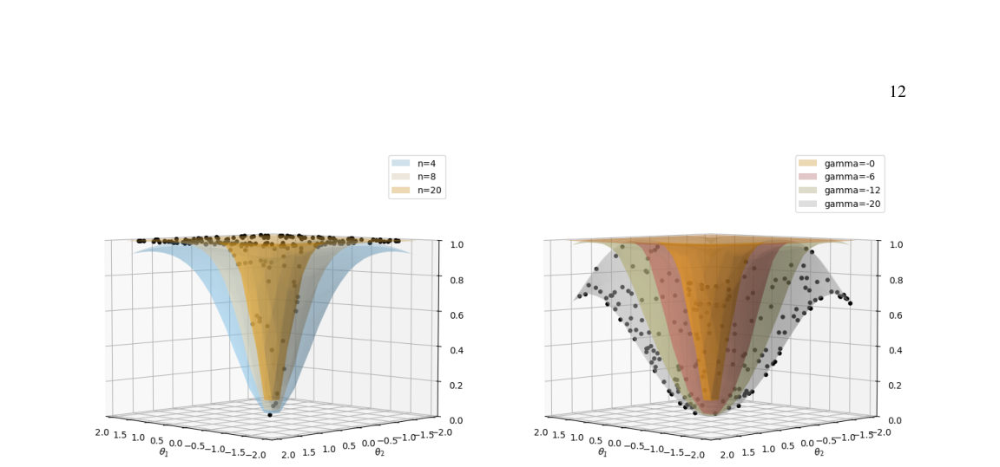
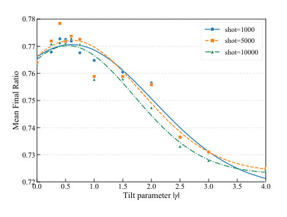
Summary. This paper proposes a new optimization objective called Quantum Tilted Loss (QTL) to combat barren plateaus in variational quantum algorithms. It demonstrates that by tuning a single parameter, one can reshape the cost landscape to enhance gradients, though this introduces a trade-off with increased measurement noise. The authors also show that specific tilt schedules can potentially recover polynomial gradient scaling.
Why it may be interesting. not directly relevant
Main problem. The vanishing gradient problem (barren plateaus) in Variational Quantum Algorithms (VQAs) and the trade-off between landscape reshaping and the statistical cost of measurement.
Main result. The introduction of Quantum Tilted Loss (QTL) which can reshape the optimization landscape to mitigate barren plateals, specifically showing that a linear negative tilt schedule can improve gradient variance from exponential to polynomial scaling.
Method. A theoretical framework using operator-level exponential tilting, entropic risk measures, and information-theoretic tools like the Umegaki relative entropy and parameter-shift rules.
Model / system. Variational quantum circuits (VQCs) and ansätze, applied to energy minimization (VQE) and combinatorial optimization (QAOA) using Hamiltonians with specific spectral properties.
Key observables. Hamiltonian expectation values, QTL (Quantum Tilted Loss), CVaR (Conditional Value-at-Risk), and the partition function $Z_\gamma$.
Important parameters / regimes. The tilt parameter $\gamma$ (controlling spectral emphasis), the shot count $N$, and the spectral gap $\Delta$.
Assumptions / limitations. Assumes finite-dimensional Hilbert spaces and focuses on the distinction between the NISQ regime (stochastic sampling) and the fault-tolerant regime (coherent algorithms).
Figures summary. Figure 1 provides a schematic of the QTL optimization loop, contrasting the flat landscape of standard objectives with the enhanced curvature of the tilted landscape.
Paper structure. The paper introduces the QTL framework, provides a unified theory linking it to existing heuristics like CVaR, analyzes the trainability-estimability trade-off in NISQ vs. fault-tolerant regimes, and concludes with numerical benchmarks and gradient variance analysis.
Variational quantum algorithms (VQAs) are leading strategies for using near-term quantum devices, with a well-studied bottleneck being their trainability. Standard expectation-value objectives with expressive circuits frequently encounter barren plateaus in the optimization landscape during training. To address this challenge, we introduce the Quantum Tilted Loss (QTL), an operator-level generalization of classical exponential tilting designed to systematically reshape the optimization landscape. By tuning a single continuous parameter, QTL can amplify gradient signals in structured settings while preserving the problem's true global minima. We provide a theoretical foundation that unifies standard expectation minimization with popular tunable heuristics, such as Conditional Value-at-Risk (CVaR) and Gibbs formulations. Deploying this framework requires balancing the geometric benefits of a sharpened landscape against the statistical cost of estimating nonlinear gradients from finite quantum measurements. We formalize this trainability-estimability trade-off, demonstrating how aggressive tilting fundamentally shifts the optimization bottleneck from landscape flatness to sample complexity. Thus, the operational bottleneck shifts from vanishing gradients to measurement sampling variance. Finally, we exhibit through numerical simulations that ascending tilt schedules can outperform fixed-tilt training in finite-shot regimes.
Authors: Tom Williams, Mina Doosti, Farid Shahandeh
Type: theory · Category: quantum information and computing · PDF: https://arxiv.org/pdf/2605.00975v1
Analysis basis: full PDF text, analyzed in chunks
Topic relevance: entanglement & information structure 2/5 · quantum measurements 2/5
Summary. This paper introduces a new sheaf-theoretic formulation for preparation contextuality, treating it as a failure of stochastic extension rather than marginalization. It provides a rigorous mathematical framework to identify when local preparation statistics cannot be consistently unified into a single global model. The authors demonstrate the relevance of this theory by proving that the PBR scenario is preparation-contextual.
Why it may be interesting. It provides a new mathematical foundation for understanding the structural foundations of quantum mechanics, specifically regarding how local preparation procedures relate to global quantum states, which is fundamental to quantum information theory.
Main problem. The paper aims to develop a sheaf-theoretic framework for 'preparation contextuality,' a concept dual to measurement contextuality, by defining it as an obstruction to the stochastic extension of local preparation statistics.
Main result. The authors establish that preparation contextuality arises when local preparation data cannot be extended to a global response matrix, and they prove that a specific quantum-mechanical PBR-type scenario exhibits this contextuality.
Method. The study uses a linear-algebraic and sheaf-theoretic approach, employing the Kleisli category of the distribution monad and imposing structural constraints like input independence and compositionality on extension matrices.
Model / system. The framework is applied to a preparation-dual analogue of the Bell scenario, specifically using a PBR-type model involving two laboratories (Alice and Bob) with multiple preparation procedures and a four-outcome POVM.
Key observables. Local and global preparation statistics, empirical models (probability distributions), and the existence of a global response matrix.
Important parameters / regimes. The number of sources, preparation instances, and measurement outcomes; the input-independence and compositionality of extension matrices.
Assumptions / limitations. The framework assumes finite sets of measurements and preparations, and requires that extension matrices satisfy input independence and compositionality to ensure coherent refinement.
Figures summary. The notes mention a probability table illustrating an empirical model for the Abramsky-Brandenburger-Bell model and a large matrix representing the empirical model for the PBR scenario.
Paper structure. The paper reviews measurement-based sheaf theory, introduces the preparation-dual framework, establishes mathematical constraints on extension matrices, and concludes with a formal proof of contextuality using a PBR-type example.
We introduce a preparation-dual notion of contextuality, formulated as an obstruction to stochastic extension. In parallel with the sheaf-theoretic formulation of measurement contextuality, preparation contextuality arises when locally specified preparation statistics cannot be extended to a single global response matrix compatible with all source contexts. Whereas measurement contextuality concerns the incompatibility of restriction maps (marginalisation), the preparation setting requires stochastic extension of partial conditioning data, which is inherently non-unique. We identify minimal structural and preparation compatibility conditions on admissible extension matrices and show that they enforce a rigid product form. This leads to a notion of preparation contextuality in which the absence of any admissible global response representation witnesses contextuality, while preparation compatibility identifies the cases in which this obstruction is nontrivial. The framework is formulated explicitly in matrix form and illustrated by a quantum-mechanical example exhibiting preparation contextuality.
Authors: David Gamarnik, Francisco Pernice, Alexander Schmidhuber, Alexander Zlokapa
Type: theory · Category: disordered systems and neural networks · PDF: https://arxiv.org/pdf/2605.02768v1
Analysis basis: full PDF text, analyzed in chunks
Topic relevance: Keldysh / 2PI / non-Gaussian methods 2/5 · entanglement & information structure 2/5
Summary. This paper provides a rigorous mathematical proof for the free energy of the SYK model at high temperatures, moving beyond the heuristic replica and path-integral methods used in physics. By using random graph theory and the cavity method, the authors bridge the gap between rigorous mathematics and holographic/condensed matter physics. The results are numerically validated to match known physics-based predictions.
Why it may be interesting. not directly relevant
Main problem. The paper seeks to provide a mathematically rigorous computation of the free energy limit (both annealed and quenched) for the Sachdev-Ye-Kitaev (SYK) model at high temperatures.
Main result. The authors rigorously establish the existence of the free energy limit for sufficiently small inverse temperature beta and provide an explicit formula for it, which shows perfect numerical agreement with previous physics-based derivations.
Method. The proof utilizes the theory of the component structure of sparse random graphs and a variant of the cavity method, employing generating functions and the saddle point method to analyze the partition function expansion.
Model / system. The Sachdev-Ye-Kitaev (SYK) model, a disordered quantum mean-field model involving q-body interactions of Majorana operators in a Hilbert space of dimension 2^(n/2).
Key observables. Annealed and quenched free energy limits, ground state energy limit, and the expected partition function.
Important parameters / regimes. Inverse temperature (beta), interaction order (q), and the large-n limit.
Assumptions / limitations. The rigorous results are restricted to the high-temperature regime (small, constant beta); the model is assumed to be non-glassy in this regime.
Figures summary. Figure 1 illustrates chord intersections in a unit square; Figure 2 and 3 show numerical comparisons between the authors' derived free energy and known results for q=2 (RMT) and q=4 (physics derivations).
Paper structure. The paper introduces the SYK model and the problem of rigorous free energy computation, develops a combinatorial expansion of the partition function using hypergraph theory, introduces a functional fixed-point equation (CCG), applies the saddle point method to find the asymptotic growth of coefficients, and concludes with numerical validation against established physics results.
The Sachdev-Ye-Kitaev (SYK) model is a disordered quantum mean-field model studied in condensed matter physics and the holographic theory of black holes. Its structural properties can be derived heuristically using a combination of the replica method and path integration techniques. Analyzing it mathematically rigorously, however, turned out to be notoriously difficult, even for basic questions such as computing the annealed free energy. In this paper we rigorously compute the free energy limit (annealed and quenched) for this model at high enough but constant temperature. Our results are in numerical agreement with the results derived by physics methods. Remarkably, though, our method of proof is novel and is different from the physics approach. It is based on (a) the theory of the component structure of sparse random graphs and (b) a variant of the cavity method, used widely in prior rigorous and heuristic treatments of classical spin glasses.
Authors: Daniel J. Heimsoth, A. Baha Balantekin, Pooja Siwach
Type: theory · Category: quantum information and computing · PDF: https://arxiv.org/pdf/2605.01099v1
Analysis basis: full PDF text, analyzed in chunks
Topic relevance: entanglement & information structure 2/5 · non-equilibrium dynamics 2/5
Summary. This paper presents a hybrid quantum-classical algorithm using qutrits to simulate three-flavor neutrino oscillations in supernovae. By using the Dirac-Frenkel variational principle, the method avoids the deep circuits required by Trotterization and achieves accuracy comparable to exact numerical integration for significant time intervals. This approach provides a potential pathway for simulating complex many-body neutrino physics on near-term quantum hardware.
Why it may be interesting. It demonstrates a practical application of qutrit-based quantum computing and variational algorithms to simulate many-body flavor dynamics, offering an alternative to standard qubit-based Trotterization for complex SU(3) systems.
Main problem. Simulating the complex time evolution of a self-interacting, three-flavor neutrino system in a core-collapse supernova while overcoming the high error rates and deep circuit requirements of traditional quantum Trotterization on NISQ devices.
Main result. The hybrid quantum-classical algorithm produces results comparable to exact numerical integration for up to t approximately 20-30 omega_0^-1, avoiding the need for deep, error-prone Trotter circuits.
Method. A variation of the Quantum-Assisted Simulator (QAS) based on the Dirac-Frenkel variational principle, using qutrit Hadamard tests to calculate expectation values of unitary operators, with the actual time evolution performed classically.
Model / system. A three-flavor (SU(3)) neutrino system in a core-collapse supernova environment, modeled using a neutrino bulb model and a single-angle approximation, with a Hamiltonian containing vacuum and neutrino-neutriino interaction terms.
Key observables. Survival probability of the initial state, mass state probabilities (P_m1, P_m2, P_m3), von Neumann entropy, and expectation values of Q3 and Q8.
Important parameters / regimes. Energy scale of vacuum oscillations (omega_0), time step (delta t = 0.005 omega_0^-1), and number of measurement shots (2,000,000 per test).
Assumptions / limitations. Single-angle approximation, neutrinos travel at the speed of light, and neutrinos are treated in a discrete momentum set.
Figures summary. Circuit diagrams for qutrit Hadamard tests; comparison of survival probability and mass state probabilities between the hybrid algorithm and exact ODE; comparison of asymptotic expectation values and von Neumann entropy; and error analysis using the alpha-norm.
Paper structure. The paper identifies the limitations of Trotterization, proposes a qutrit-based SU(3) mapping using the Dirac-Frenkel principle, details the hybrid algorithm implementation, presents simulation results and error analysis, and concludes with scaling challenges and future directions.
We simulate a self-interacting three-flavor neutrino system within a core-collapse supernova using a hybrid classical-quantum algorithm on a qutrit computer. Based on the Dirac-Frenkel evolution equations, we employ a variation of the quantum-assisted simulator (QAS) to calculate the system's time evolution operator by performing qutrit Hadamard tests to find expectation values of unitary operators in the Hamiltonian. The time evolution simulation is then done classically. We find that the hybrid algorithm produces results comparable to an exact numerical integration out to times of $t \approx 30 \,ω_0^{-1}$ with time step $δt = 0.005 \,ω_0^{-1}$, where $ω_0$ is the energy scale of the single neutrino vacuum oscillations. We discuss the lessons learned in simulating neutrino systems using this hybrid quantum-classical algorithm, along with the advantages it offers over quantum Trotterization.
Authors: Fangfang Wang, Wei Liu, Kai Qi, Ying Tang, Zengru Di
Type: theory · Category: statistical mechanics · PDF: https://arxiv.org/pdf/2605.01151v1
Analysis basis: full PDF text, analyzed in chunks
Topic relevance: non-equilibrium dynamics 2/5 · non-equilibrium universality 2/5
Summary. This paper discovers that increasing the activation threshold in 2D bootstrap percolation triggers a geometric crossover. While low-threshold dynamics are characterized by a single collective response, high-threshold dynamics split into multiple response scales dominated by boundary structures. This demonstrates that bulk density measurements alone are insufficient to describe the structural reorganization of the absorbing state in high-threshold systems.
Why it may be interesting. not directly relevant
Main problem. The study investigates whether increasing the activation threshold (k) in 2D bootstrap percolation qualitatively reorganizes the geometry of the absorbing state and whether bulk observables are sufficient to capture these structural changes.
Main result. The authors identify a threshold-controlled geometric crossover where high-threshold regimes (k=3, 4) exhibit multiple geometric response scales and boundary-dominated signatures, unlike the single response window seen at low thresholds (k=2).
Method. Numerical simulations using synchronous bootstrap updates on square lattices of various sizes (L=30 to 180) with large-scale sampling (10^5 configurations) and finite-size scaling analysis.
Model / system. Two-dimensional bootstrap percolation on an L x L square lattice with periodic boundary conditions, involving an irreversible, deterministic activation process based on a threshold k.
Key observables. Bulk observables (final active density, density fluctuations, mean gain) and geometric/boundary observables (boundary-edge density, non-singleton cluster site/edge densities, and isolated-site signals).
Important parameters / regimes. Activation threshold (k=1, 2, 3, 4), initial occupation probability (p), and system size (L).
Assumptions / limitations. The system is treated as an irreversible, deterministic process; the study focuses on accessible system sizes and does not claim a thermodynamic higher-order transition.
Figures summary. Figure 1 shows the bootstrap rule and the distinction between bulk and geometric observables; Figure 2 displays normalized response curves showing peak splitting; Figure 3 shows peak amplitude scaling; Figure 4 shows the shift in characteristic response positions; Figure 5 illustrates time-resolved mechanism traces.
Paper structure. The paper introduces the bootstrap model and the problem of geometric reorganization, presents numerical results for different thresholds (k=1 to 4), analyzes the scaling of bulk vs. boundary observables, provides a dynamical interpretation via mechanism traces, and concludes with a summary of the identified regimes.
Two-dimensional bootstrap percolation is usually characterized by bulk observables, but whether increasing the activation threshold qualitatively reorganizes the geometry of the absorbing state has remained unclear. Here we show that the response undergoes a threshold-controlled geometric crossover. At low thresholds, the extrema of bulk and boundary-sensitive observables remain confined to a single collective low-$p$ window. At high thresholds, they split into distinct branches, revealing multiple geometric response scales. Over the accessible system sizes, the dominant finite-size signatures shift from fluctuations of the final active density to non-singleton boundary observables, while the fluctuation peak itself decreases. Time-resolved mechanism traces show that this crossover is accompanied by a progression from extended collective propagation to frontier exhaustion and, at the highest threshold, to quasi-one-step stabilization. Our results identify boundary organization as the dominant structural signature of high-threshold bootstrap percolation and show that conventional bulk observables alone do not capture the full reorganization of the absorbing state.
Authors: Jeremias Aguilera-Damia, Dionysios Anninos, Tarek Anous, Johnny Gleeson, Alan Rios Fukelman
Type: theory · Category: other · PDF: https://arxiv.org/pdf/2605.02883v1
Analysis basis: full PDF text, analyzed in chunks
Topic relevance: Keldysh / 2PI / non-Gaussian methods 2/5 · entanglement & information structure 1/5
Summary. This paper explores the persistence of discrete global symmetries in de Sitter space using the p-Schwinger model. It shows that spontaneous symmetry breaking leads to multiple degenerate de Sitter vacua, which can be interpreted as microstates of the cosmological horizon. The work provides a formal path-integral construction for these states in a gravitational context.
Why it may be interesting. not directly relevant
Main problem. Investigating whether discrete global symmetries (zero-form and one-form) and their spontaneous breaking patterns persist when moving from Minkowski space to a de Sitter background.
Main result. The authors demonstrate that the Zp symmetry breaking pattern persists in de Sitter space, leading to p distinct, locally indistinguishable de Sitter vacua which may be interpreted as microstates of the de Sitter horizon.
Method. The study utilizes bosonization, the Hartle-Hawking Euclidean path integral construction, and a large Nf semiclassical analysis in 2D quantum gravity.
Model / system. The p-Schwinger model (a 2D QED extension with fermions of non-unit integer charge p) and an Abelian BF theory, both analyzed on a global de Sitter background and coupled to 2D quantum gravity.
Key observables. Electric field two-point function, Wilson line expectation value, chiral condensate, meson n-point functions, and topological line/point operators.
Important parameters / regimes. Integer charge p, number of fermion flavors Nf, cosmological constant Lambda, and the de Sitter length scale.
Assumptions / limitations. The identification of vacua as horizon microstates is speculative; the analysis of symmetry breaking via wormholes is heuristic; and the results may be specific to 2D geometries.
Paper structure. The paper begins by analyzing the symmetry structure of the p-Schwinger model and BF theory, moves to a path-integral construction of states on a sphere, extends the model to include dynamical 2D gravity in the large Nf limit, and concludes with a discussion on the stability of these symmetries against gravitational effects like wormholes.
We analyze a simple extension of the Schwinger model, which we refer to as the $p$-Schwinger model, on a de Sitter background. In this theory, the charged massless fermions carry non-unit integer charge $p$. In Minkowski space, the $p$-Schwinger model has discrete zero- and one-form global symmetries that are spontaneously broken, yielding $p$ degenerate ground states. We demonstrate that these features persist upon placing the $p$-Schwinger model on a global de Sitter background, establishing that such discrete global symmetries can be spontaneously broken for quantum field theories in de Sitter space. In particular, the theory is endowed with $p$ distinct, but locally-indistinguishable, de Sitter invariant states, the de Sitter vacua, satisfying the Hadamard property. We couple a variant of the $p$-Schwinger model with ${\rm N}_{\rm f}$ flavors to quantum gravity with $Λ>0$, and demonstrate the existence of a semiclassical de Sitter saddle at large ${\rm N}_{\rm f}$. In the gravitational theory, the $p$ de Sitter invariant vacua are speculatively interpreted as microstates of the de Sitter horizon in the low-energy effective field theory.
Authors: Xiaokang Li, Chentao Bao, Hai Chen, Mingyi Liu, Dayong Wang
Type: both · Category: other · PDF: https://arxiv.org/pdf/2605.01233v1
Analysis basis: full PDF text, analyzed in chunks
Topic relevance: entanglement & information structure 2/5 · quantum measurements 1/5
Summary. This paper presents a feasibility study for detecting quantum entanglement in tau-lepton pairs at the future Super Tau-Charm Facility. By simulating the pi-pi decay channel, the authors demonstrate that the facility can accurately reconstruct quantum correlations and validate the quantum-tomography framework. This establishes STCF as a competitive platform for high-energy particle physics studies involving quantum information observables.
Why it may be interesting. not directly relevant
Main problem. Assessing the feasibility of using the proposed Super Tau-Charm Facility (STCF) to probe quantum entanglement and Bell-inequality violation in tau-lepton pairs.
Main result. The study successfully established a consistency chain for reconstructing entanglement, achieving a reconstructed concurrence of 0.279 ± 0.007 in the pi-pi channel, demonstrating STCF's potential for precision quantum correlation studies.
Method. Full Monte Carlo simulations using the OSCAR framework, including Geant4-based detector simulation, and quantum state tomography via the polarimeter-vector method.
Model / system. The physical system consists of tau-lepton pairs (tau+tau-) produced via electron-positron annihilation at a center-of-mass energy of 7 GeV at the proposed Super Tau-Charm Facility (STCF).
Key observables. Concurrence (C), Bell-inequality violation parameter (m12), Spin Density Matrix (SDM) elements, and spin-analyzing power (kappa).
Important parameters / regimes. Center-of-mass energy sqrt(s) = 7 GeV; peak luminosity of 0.5 x 10^35 cm^-2s^-1; tau decay length of approximately 140 micrometers.
Assumptions / limitations. The study uses a 'good-solution' approach to handle the two-fold ambiguity in tau momentum reconstruction, effectively isolating detector effects from reconstruction errors.
Figures summary. Figure 1 shows SM predictions for Concurrence and the Horodecki condition as functions of energy and scattering angle; Figure 2 displays angular distributions of decay products along specific axes.
Paper structure. The paper introduces the scientific motivation, describes the experimental platform (STCF) and simulation framework, details the reconstruction methodology and the consistency chain, presents results for the pi-pi and rho-rho channels, and discusses limitations regarding vertex resolution.
Quantum entanglement and Bell-inequality violation in $τ^+τ^-$ pairs provide a sensitive probe of quantum correlations in high-energy interactions. We present a feasibility study of $e^+e^- \to τ^+τ^-$ at the proposed Super Tau-Charm Facility based on full Monte Carlo simulation at $\sqrt{s} = 7$ GeV, focusing on the $ππ$ channel ($τ^\pm \to π^\pmν$), which offers the maximal spin-analyzing power $|κ| = 1$ and the simplest final-state topology for validating the quantum-tomography framework. We establish a consistency chain from the tree-level QED prediction through truth-level and detector-level reconstruction, yielding a reconstructed concurrence of $0.279 \pm 0.007$ with the good-solution approach. A complementary full-simulation study of the $ρρ$ channel is also briefly reported. These results demonstrate that the STCF can provide a competitive platform for precision studies of quantum correlations in $τ$-lepton pairs.
Authors: Abir Mukherjee, Kajal Sharma, Ajit K Katiyar, Saranya Das, Samit K Ray, Samaresh Das
Type: both · Category: quantum information and computing · PDF: https://arxiv.org/pdf/2605.02646v1
Analysis basis: full PDF text, analyzed in chunks
Topic relevance: QC/QI experiment 2/5 · non-equilibrium dynamics 1/5
Summary. This paper demonstrates the fabrication of a CMOS-compatible resonant tunneling device using monolayer MoS2 that exhibits high peak-to-valley ratios. By combining experimental transport measurements with DFT and NEGF simulations, the authors show how valley-selective tunneling can be controlled. This work provides a foundation for developing room-temperature quantum technologies and spin-valley qubits.
Why it may be interesting. The paper explores the manipulation of valley-selective transport and spin-valley states via gate voltage, which is a fundamental concept for developing 2D-material-based quantum information processing and spin-valley qubits.
Main problem. The study aims to develop CMOS-compatible 2D-based Resonant Tunneling Devices (RTDs) and investigate valley-selective tunneling density of states in monolayer MoS2 for potential use in spin-valley qubit technology.
Main result. The researchers demonstrated a high Peak-to-Valley Ratio (PVR) of 178 at 4K and 24 at room temperature, showing that gate-voltage-induced manipulation of momentum-conserved and non-conserved tunneling is possible.
Method. The work combines experimental fabrication (CVD growth, e-beam evaporation, and transfer) and characterization (Raman, AFM, XPS, CL, and I-V measurements) with theoretical modeling using Density Functional Theory (DFT) and Non-Equilibrium Green's Function (NEGF) frameworks.
Model / system. The physical system is a double-barrier resonant tunneling device consisting of a CVD-grown monolayer MoS2 quantum well sandwiched between Al2O3 tunneling barriers, integrated with highly n-doped Si reservoirs.
Key observables. Peak-to-Valley Ratio (PVR), Negative Differential Resistance (NDR), Tunneling Density of States (TDOS), and I-V characteristics.
Important parameters / regimes. Temperature regimes from 4K to 300K, MoS2 effective mass (0.46m0), Si effective mass (0.19m0), and sulfur vacancy concentrations.
Assumptions / limitations. The theoretical model utilizes an effective mass approximation and a mode space approach to reduce computational burden.
Figures summary. Figure 1 shows Raman spectra, Raman maps, micro-PL, CL characterization, and AFM height estimation; Figure 2 displays high-resolution XPS spectra for elemental composition and valence band analysis.
Paper structure. The paper introduces the fabrication of MoS2 RTDs, details the experimental characterization of material quality and defects, presents the electrical transport measurements (I-V, NDR, PVR), provides theoretical validation via DFT and NEGF simulations of the tunneling density of states, and concludes with applications in spin-valley qubit technology.
The present work experimentally demonstrates the fabrication of CVD grown monolayer MoS2 ultra thin quantum well based double barrier resonant tunneling device (RTD) architecture well compatible with conventional CMOS fabrication technology. The strongly quantized electronic states from multiple valleys in the momentum space in such ultra 2D sheet along the c-axis sandwiched in between Al2O3 tunneling barriers exhibit multiple resonant tunneling peaks thereby enhancing the FWHM of the NDR region as derived from experimental I-V characteristics as well as theoretical joint invision through Density Functional Theory (DFT) and Non-Equilibrium Greens function (NEGF) visualized via Tunneling Density of States (TDOS). Understanding extended to S-vacancies not only change the bandgap, as evaluated through nanoscale Cathodoluminescence (CL) spectroscopy, but also alters the effective mass hence the mobility as investigated here within the high symmetry path in the k-space. Electrical performances of fabricated RTD, starting from cryogenic to room temperatures, show a significant milestone via exhibiting huge PVR values of 178 at 4K and 24 at RT with more possible improvement in the field of room temperature quantum technology. Momentum conserved and non conserved tunneling from highly n-doped Si through multiple valleys of 1L-MoS2 provides a tremendous opportunity in gate-induced manipulation in Spin-Valley Qubit technology operational at deep cryogenic temperatures (mK).
Authors: Matías A. Di Muro, Miguel Hoyuelos
Type: theory · Category: statistical mechanics · PDF: https://arxiv.org/pdf/2605.02579v1
Analysis basis: full PDF text, analyzed in chunks
Topic relevance: non-equilibrium dynamics 2/5
Summary. This paper provides a general method to calculate diffusion coefficients in interacting systems by relating them to known ideal-system values through thermodynamic geometry. It offers a computationally efficient alternative to expensive molecular dynamics for predicting transport properties in solids and surfaces.
Why it may be interesting. not directly relevant
Main problem. Developing a general thermodynamic framework to determine the transport coefficients (Onsager matrix) for interacting particle diffusion on a lattice.
Main result. The authors derive a fundamental relationship where the Onsager matrix of an interacting system is the ideal-system matrix scaled by the ratio of the determinants of their covariance matrices. This framework successfully reproduces the Darken equation for solids and the Zhdanov model for surface diffusion.
Method. The study employs classical irreversible thermodynamics, Einstein's fluctuation theory, and information geometry (using Massieu functions and Hessian matrices). Results are validated using Monte Carlo simulations.
Model / system. A lattice-gas model where each site is treated as an open thermodynamic system. The system includes binary mixtures of species A and B with various interaction potentials, including soft-core and power-law chemical potentials.
Key observables. Onsager matrix (L), transport coefficients, diffusion currents (intrinsic, tracer, and collective), and thermodynamic factor (Gamma).
Important parameters / regimes. Coverage (theta), chemical potential (mu), temperature (T), and the degree of particle interaction (represented by the excess chemical potential).
Assumptions / limitations. Assumes local thermal equilibrium, small thermodynamic gradients (linear response regime), and that the range of interactions is much smaller than the cell size. It also neglects higher-order terms in the entropy expansion.
Figures summary. Figure 1 shows a schematic of particle transfer between cells; Figure 2 displays steady-state coverage profiles on a 1D lattice; Figures 3 and 4 show diffusion currents as a function of coverage for various interaction models, demonstrating agreement between theory and simulation.
Paper structure. The paper begins by defining the thermodynamic framework and the relationship between transition rates and entropy; it then develops the scaling relation for the Onsager matrix using the covariance matrix determinant; finally, it applies this theory to specific models (Darken and Zhdanov) and validates it via Monte Carlo simulations.
This work presents a general thermodynamic approach to describe particle diffusion on a lattice, a model used to study transport processes in solids and on surfaces. By treating each lattice site as an open thermodynamic system, the effects of microscopic particle interactions are represented through the chemical potential. A fundamental relationship between the Onsager matrix ($L$) and its ideal-system counterpart ($L_\text{id}$, where interactions are neglected) using the determinant of the covariance matrix is demonstrated. This framework allows for the calculation of transport coefficients using the combination of their ideal values and thermodynamic properties. The general result is successfully applied to reproduce the Darken equation for substitutional diffusion in solids and to derive the non-diagonal diffusion matrix of the Zhdanov model for surface diffusion of Langmuir particles. In the last case, analytical predictions are further validated through numerical simulations across various interaction potentials.
← Index · ← Previous · Next →